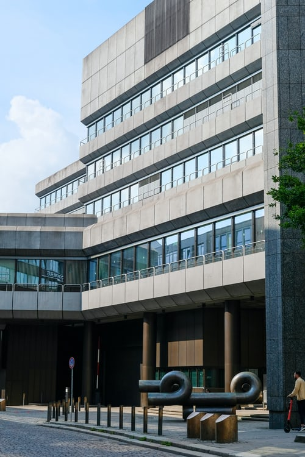

|
LIFE MATTERS Hospital |
|
LIFEM Hospital, Amritsar is one of the well-recognized multi-super specialty hospitals catering to the healthcare needs of people residing in Amritsar and its surrounding areas including Himachal Pradesh and Jammu & Kashmir. Started its operation as Cardiac Hospital in 2003, the facility today houses over 30 specialties with the special focus on Cardiac Sciences, Orthopaedic & Joint Replacement, Neurosurgery, Urology, Gastro Sciences, Oncology, Critical Care, to name a few. With the special focus on the management of critically ill patients, the hospital boasts of having 1/3rd of its beds dedicated to critical care and comes well-equipped with the latest technology and infrastructure. LIFEM Hospital Amritsar is also the only hospital in the region to have the following accreditations. - NABH accreditation for the hospital (2011, 2017) - NABL accredited (2011, 2018) - NABH accredited for Nursing Excellence (2017) - NABH Et |
|
Since the past 20 years LIFEM Healthcare – renowned as Asia’s largest and fastest growing hospital network – has been committed to being the leading provider of health care services in the country by providing superior, professional health care and comfort to all our patients and their families. At LIFEM, our patients come first, and we have a dedicated focus on facilitating high-quality clinical care and ensuring high-quality outcomes for our patients. Our hospital situated in Bannerghatta Road is known for providing an extensive range of surgical and medical services for patients in Bangalore city and surrounding suburbs and forms a part of LIFEM Healthcare. With the capacity of 276 beds – one of the largest of its kind in the area – our dedicated staff work round the clock within this state-of-the-art facility to provide our patients with 24/7 care. Our professional team comprises of caring and progressive individuals who enjoy what they do and embrace a positive spirit to get things done. In that regard, we have on board, a dedicated group of specialists and staff always on hand to attend to your needs while also ensuring that your safety, comfort and well-being is looked after. Recognized for excellence and cutting-edge prowess in a wide number of areas, LIFEM’s Healthcare facility in Bannerghatta Road has enabled locals to benefit from their world-renowned experience and expertise. |
|
LIFEM Malar Hospital, formerly known as Malar Hospital, was Established in 1992, became a household name for tertiary care hospital services in Chennai over the years. In 2007, LIFEM Healthcare – India’s fastest growing hospital network acquired stakes in Malar Hospital Limited. A 180-bed multi-specialty, tertiary care hospital offers comprehensive medical care in more than 40 specialties such as cardiology, cardio-thoracic surgery, neurology, neurosurgery, orthopaedics, nephrology, gynaecology, gastroenterology, urology, paediatrics, and diabetes among others. The hospital specializes in cutting edge medical technology and dedicated patient care services. LIFEM Malar Hospital is also home to Asia’s largest heart transplant centre with over 300 heart transplants to its credit. |
|
LIFEM Hospital is a 23 bed facility spread over an area of 20,000 sq ft at Chirag Enclave locality. The hospital has been operational since January 2012 and has emerged as a one-its-kind facility in North India that provides comprehensive treatment, care and management for diabetes, metabolic diseases and endocrine disorders. The hospital is equipped with 2 OTs advanced centre for diabetic foot and wound care. , insulin pump, diabetic eye lab and dialysis lab, diagnostic lab, radiology and pharmacy services. The hospital is also known for bariatric and minimal access surgery and also provides scientific weight loss and weight management programmes. LIFEM Hospital has a dedicated team of medical experts that follow globally accepted protocols, is supported by state-of-the-art technology, with internationally acclaimed Padma awardee and Dr. B. C. Roy awardee Prof. Anoop Misra, a diabetes expert and researcher |
|  |
LIFEM Hospital Jaipur is the first NABH (National Accreditation Board for Hospitals & Healthcare Providers) Accredited Hospital in Rajasthan, since July 2008. It is also the proud recipient of Nursing Excellence from NABH in 2016. These accreditations ensure that the highest and strictest patient safety standards are followed in the hospital. It is the veritable torch bearer of super specialty centres of excellence across the country. With over 245 beds, this tertiary care hospital has established itself as one of the best tertiary care hospitals in the region. In last 12 years, LIFEM Hospital, Jaipur has successfully managed to develop world class facilities. LIFEM Jaipur is a pioneer in high-end procedures like Kidney Transplant, Total Knee & Hip Replacement with Robotics & Computer Navigation, Adult and Paediatric Cardiac Surgery including Congenital Heart Disease, GI & Bariatric Surgery, Complex Neuro Intervention Procedures with minimal invasive through computer Navigation, Surgical & Medical management of Brain Stroke, Comprehensive & advance Cardiac Care, Laser Surgery, Single Incision Laparoscopic Surgery(SILS), along with Trauma and Critical Care. |
|
LIFEM Hospital, Anandapur, Kolkata is a world-class super-specialty NABH accredited tertiary care healthcare hospital. The 10-storied, 400 bed hospital (operational 200 Bed) is built on a 3 lakh square feet area, equipped with the latest technologies in the medical world. This state-of-the-art facility specialises in cardiology and cardiac surgery, pulmonology, urology, nephrology, neurosciences, orthopaedics, digestive, emergency and critical care. Among the various amenities, the hospital has a 24-hour accident and emergency service including trauma treatment, critical care ambulance service, blood bank, cardiac operation theatre, preventive health check, diagnostic and catheterisation laboratory, critical and emergency care, diet counselling, physiotherapy and rehabilitation, laboratory and microbiological services, stress management, 24x7 pharmacy, endoscopy unit and emergency room. |
|
Commenced its operation in November 2013, LIFEM Hospital Ludhiana has become one of the most revered tertiary care hospitals in the region catering to the healthcare needs of people residing in Ludhiana and its adjoining districts. This 259-bedded capacity multi-specialty hospital comes well equipped with state-of-the-art technology and world-class infrastructure including 6 Laminar Flow Operation Theaters, Cath Lab, round-the-clock triage to handle all sort of emergencies, one-of-its-kind physiotherapy facility to name a few. Touching over a lakh people every year, the hospital is known for its expertise in Cardiology, Orthopaedics & Joint Replacement, Oncology, Urology, Neurology, Neurosurgery, Gynaecology, Gastro sciences, and Breast surgery. With the special focus on a few medical conditions and patient groups, it runs specialty clinics such as Breast clinic, Spine clinic, Pain Clinic, Sports Injury Clinic and Child Clinic. |
|
LIFEM Hospital Mohali has been Internationally Accredited by Joint Commission International (JCI) since 2007(renewed for the 5th consecutive time in 2019). It is also the proud recipient of accreditation from National Accreditation Board of Hospitals (NABH), India (renewed for the 4th time in 2017). These accreditations ensure that the highest and strictest patient safety standards are followed in the hospital. It is the veritable torch bearer of super specialty centers of excellence across the country. With 348 beds, this tertiary care hospital has established itself as one of the best cardiac care centers in the region. |
|
LIFEM Hospital, Kalyan is one of the best multi-speciality tertiary care hospitals in Kalyan. We have grown to become the most sought-after destination in the Thane region for providing healthcare services. LIFEM Hospital, Kalyan is a state-of-the art facility, spread over 31,000 square feet with 75 beds. The hospital has a team of highly experienced and qualified medical professionals assisted with the latest medical technology to provide the best healthcare and medical facilities for patients in the vicinity. Since the inception in 2007, we have strived to establish a trusted and comforting presence, catering to the medical needs of the community and patients travelling from the neighbor-hood. |
|
|
|---|
+91 96366 20000 / 01
 LifeM@hospital.com
LifeM@hospital.com
© Copyright 2021 Life Matters Hospital. All Right Reserved Designed and Developed by Life Matters Hospital